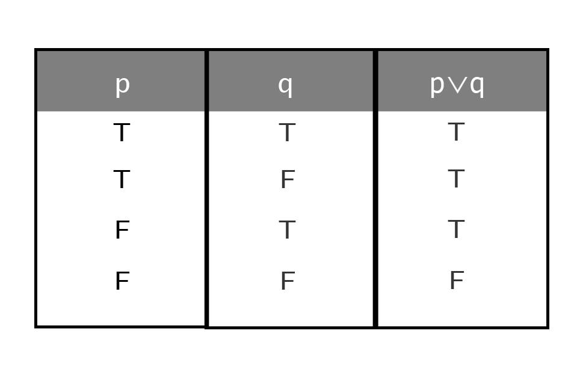
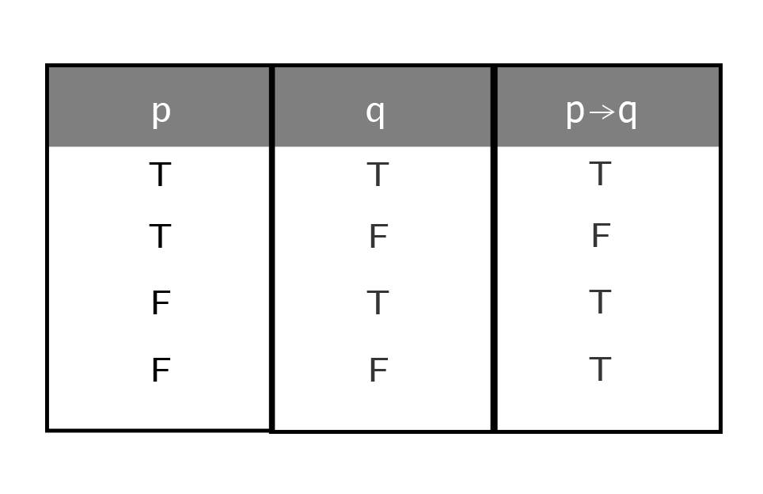

ตางรางค่าความจริง
ตางรางค่าความจริง เป็นตารางที่แสดงค่าความจริงที่เป็นไปได้ทั้งหมดของประพจน์ค่าความจริงของตารางจะมีเท่ากับ 2n เมื่อมี n เป็นจำนวนประพจน์
1) ค่าความจริงของประพจน์์ที่มีตัวเชื่อมเพียงตัวเดียว
ตารางค่าความจริงที่แสดงค่าความเป็นจริงเป็นไปได้ทั้งหมดของประพจน์โดยมีตัวเชื่อมเพียงตัวเดียวแสดงได้ดังนี้
1) ตารางค่าความจริงของ p^q คือ
จากตารางค่าความจริงข้างต้น เมื่อต้องการหาค่าความจริงของประพจน์ที่มีตัวเชื่อม “และ” ก็เพียงแต่ใช้ความรู้คณิตศาสตร์
พิจารณาค่าความจริงของประพจน์ที่นำมาเชื่อมว่าตรงกับกรณีใด เช่น
ต้องการหาค่าความจริงของ 3 Î {1, 3, 5, …} และ 3 เป็นจำนวนคี่
จะต้องพิจารณาค่าความจริงของ “3 Î {1, 3, 5, …}” และ “3 เป็นจำนวนคี่” ซึ่งเห็นได้ไม่ยากว่ามีค่าความจริงเป็นจริงทั้งคู่
ฉะนั้น ค่าความจริงของ 3 Î {1, 3, 5, …} และ 3 เป็นจำนวนคี่ คือ จริง
ในทำนองเดียวกัน ค่าความจริงของ เป็นจำนวนจริง และ เป็นจำนวนตรรกยะ
คือ เท็จ เพราะประพจน์ เป็นจำนวนตรรกยะ มีค่าความจริงเป็นเท็จ
2) ตารางค่าความจริง pVq คือ
ในการเชื่อมประพจน์ด้วย “หรือ” มีข้อตกลงว่าประพจน์ใหม่จะเป็นเท็จในกรณีที่ประพจน์ที่นำมาเชื่อมกันเป็นเท็จทั้งคู่ กรณีอื่นๆเป็นจริงทุกกรณี
1) “เป็นจำนวนตรรกยะ หรือ เป็นจำนวนเต็ม” มีค่าความจริงเป็นเท็จ เพราะเป็นจำนวนจริงที่ไม่ใช่จำนวนตรรกยะและไม่ใช่จำนวนเต็มจากตารางสรุปได้ว่า
2) “2 เป็นจำนวนคู่ หรือ เป็นจำนวนคี่” มีค่าความจริงเป็นจริง เพราะค่าความจริงของ “2 เป็นจำนวนคู่” คือ จริง
หมายเหตุ ความหมายของคำว่า “หรือ” ที่ใช้โดยทั่วไปมีสองกรณี
กรณีที่ 1 หมายถึง อย่างใดอย่างหนึ่งเท่านั้น เช่น ในการโยนเหรียญครั้งละ 1 เหรียญต่ละครั้งเหรียญจะขึ้นหัวหรือก้อยเพียงอย่างเดียว
กรณีที่ 2 หมายถึง อย่างใดอย่างหนึ่งหรือทั้งสองอย่าง เช่น ครูให้รางวัลแก่นักเรียนที่เรียนดีหรือช่วยกิจกรรมของโรงเรียน นักเรียนที่ได้รับรางวัลบางคนอาจเรียนดีเพียงอย่างเดียว บางคนอาจช่วยกิจกรรมของโรงเรียนเพียงอย่างเดียวแต่บางคนอาจมีคุณสมบัติทั้งสองประการก็ได้
3) ตารงค่าความจริงของ p ถ้าแล้ว q
4)ตารางค่าความจริง p ก็ต่อเมื่อ q